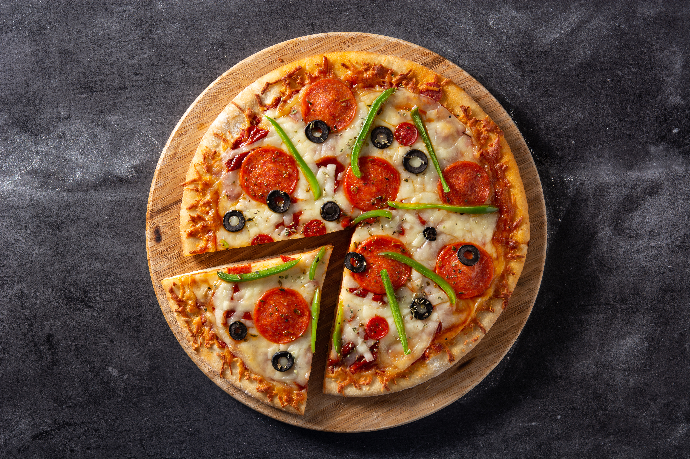

This is a delicious pizza recipe that you can try at home. Follow the steps below to make a perfect pizza.

Pizza is a popular Italian dish loved by people all around the world. It is made with soft dough, tomato sauce, melted mozzarella cheese, and different toppings such as onions and capsicum. Pizza can be prepared with many varieties of vegetables, cheese, and sauces. It is baked until the crust becomes golden and crispy and the cheese melts perfectly. Pizza is delicious and is often enjoyed with oregano and chilli flakes.